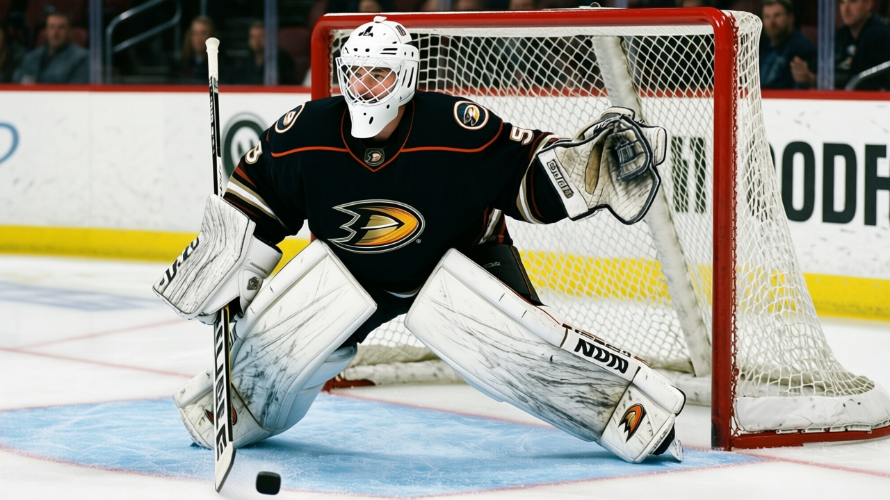

97 on $0.80M: Jean-Sebastien Giguere, the Conn Smythe man who had to rebuild himself
He won playoff MVP in 2003, went 30-36 in 2004, and now the Book has him higher than any other goaltender in the league. His contract expires in June.
 Carol BinghamFeatures writer · Rinkside
Carol BinghamFeatures writer · RinksideThe Bureau's Book has  Jean-Sebastien Giguere97 at 97. No goaltender in the league grades higher.
Jean-Sebastien Giguere97 at 97. No goaltender in the league grades higher.  Marty Turco96 sits at 94.
Marty Turco96 sits at 94.  Roberto Luongo93 at 93. Giguere is 27 years old, making $0.80M, and his contract has 0 years left. In four months he will be the most interesting unrestricted goaltender on the market, and Anaheim will have to decide whether a team built around
Roberto Luongo93 at 93. Giguere is 27 years old, making $0.80M, and his contract has 0 years left. In four months he will be the most interesting unrestricted goaltender on the market, and Anaheim will have to decide whether a team built around  Sergei Fedorov90 can afford to let him walk.
Sergei Fedorov90 can afford to let him walk.
The number is where the story lands, but it is not the whole story.
The summer that made him and the winter that broke him
In June 2003, Giguere carried  Mighty Ducks of Anaheim to the Stanley Cup Final as a seventh seed. He lost in seven to
Mighty Ducks of Anaheim to the Stanley Cup Final as a seventh seed. He lost in seven to  New Jersey Devils, and he won the Conn Smythe anyway, the fifth player in league history to take that trophy on the losing side and the first since Ron Hextall in 1987. He spent the summer in the national spotlight, collected the ESPY for best hockey player, and on September 10, 2003, signed a four-year extension.
New Jersey Devils, and he won the Conn Smythe anyway, the fifth player in league history to take that trophy on the losing side and the first since Ron Hextall in 1987. He spent the summer in the national spotlight, collected the ESPY for best hockey player, and on September 10, 2003, signed a four-year extension.
It was the beginning of the worst season of his career. Thirty wins, thirty-six losses, a 2.95 goals-against average across 66 starts. The Ducks missed the 2004 playoffs. The background sheet carries a detail that explains that winter: in the first round, Giguere was pulled after allowing three goals on eight shots in Game 5.  Ilja Bryzgalov81 finished the series and then posted three straight shutouts to start the second round against
Ilja Bryzgalov81 finished the series and then posted three straight shutouts to start the second round against  Colorado Avalanche. The goaltender who had won a Conn Smythe seven months earlier could not hold the crease in a short series.
Colorado Avalanche. The goaltender who had won a Conn Smythe seven months earlier could not hold the crease in a short series.
The Book at 97
This season Giguere has started 37 games, gone 18-18, and posted a 2.84 GAA with a .871 save percentage. His base grade in the Book is 93. The Development Index has him at +3, so the current read is 97. His strongest attributes are a wall: positioning 99, agility 99, speed 99, shot reaction 99, shot stroke 99. His weakest is toughness at 50, fight sense 51. He is built to be square, see the play early, and take the puck clean. Surviving in traffic is a different problem.
He told The Tunnel's Marcus Bell after Anaheim's 4-1 loss to  Philadelphia Flyers on January 3: "I'm square, I'm tracking, I'm making the saves I should be making. And then there's traffic and there's a guy on the far side who doesn't get back quick enough and it goes in." He was talking about the fourth goal, the one in the third period where the body was right and the hands did not close. He said it plainly, the way a man does when he knows the loss is not on him but is still in his hands.
Philadelphia Flyers on January 3: "I'm square, I'm tracking, I'm making the saves I should be making. And then there's traffic and there's a guy on the far side who doesn't get back quick enough and it goes in." He was talking about the fourth goal, the one in the third period where the body was right and the hands did not close. He said it plainly, the way a man does when he knows the loss is not on him but is still in his hands.
The team has not helped him. Mighty Ducks of Anaheim carries four men on the injured list:  Vaclav Prospal78 (foot, back 2005-01-19),
Vaclav Prospal78 (foot, back 2005-01-19),  Niclas Havelid77 (foot, back 2005-01-23),
Niclas Havelid77 (foot, back 2005-01-23),  Vitali Vishnevski74 (foot, back 2005-02-13), and
Vitali Vishnevski74 (foot, back 2005-02-13), and  Todd Reirden72 (abdomen, back 2005-02-05). Their offense runs through Fedorov, who is 35, grading 90, and scoring at a 127 pace. After Fedorov, the next name on the Ducks' scoring sheet is Cole at 79 overall, and then a drop-off that Giguere sees from his crease every night. Eighteen shots on goal in that Philadelphia game. He said it himself: "18 shots, you know, you can't win a hockey game."
Todd Reirden72 (abdomen, back 2005-02-05). Their offense runs through Fedorov, who is 35, grading 90, and scoring at a 127 pace. After Fedorov, the next name on the Ducks' scoring sheet is Cole at 79 overall, and then a drop-off that Giguere sees from his crease every night. Eighteen shots on goal in that Philadelphia game. He said it himself: "18 shots, you know, you can't win a hockey game."
The contract and what June means
Mighty Ducks of Anaheim has a $41.01M payroll. That is not a bad team's number, but it is a mid-market team's number in a 30-club league, and the per-point cost of $0.85M puts them near the top of the efficiency column. They are spending like a team trying to find the last piece.
Giguere at $0.80M is the last piece, or the one that got away. The sheet carries him at 0 contract years remaining. The four-year extension he signed in September 2003 is, on the record today, done. The market for goaltenders who grade above 90 is thin: Turco, Luongo, Khabibulin,  Tomas Vokoun92, Giguere, and
Tomas Vokoun92, Giguere, and  Martin Brodeur91. Six men in a 30-club league, four of whom have years still on their deals. Giguere does not.
Martin Brodeur91. Six men in a 30-club league, four of whom have years still on their deals. Giguere does not.
A club with cap room will look at a 27-year-old goaltender with a 97 grade and a 2.84 GAA and offer him the contract Giguere should have been offered in 2003, before the extension that set him up to fail, before the season that broke him and forced him to find the game again in practice rooms and second-period puck tracking, alone with a shooter and a bucket of pucks.
The road before Anaheim
He grew up in Laval, Quebec, played pee-wee hockey in the Mille Îles area, and was drafted 13th overall in 1995 by Hartford with a pick acquired from  New York Rangers. That debut lasted eight games. The Whalers became the Hurricanes, and Giguere was shipped to
New York Rangers. That debut lasted eight games. The Whalers became the Hurricanes, and Giguere was shipped to  Calgary Flames in August 1997 for
Calgary Flames in August 1997 for  Gary Roberts86 and Trevor Kidd. He spent four seasons in the Flames organization, mostly in the AHL with Saint John, where a 2.46 GAA and a .926 save percentage in 31 games marked him as a prospect worth keeping. The Flames kept him long enough to see him play 22 NHL games in two seasons, then traded him to Anaheim in June 2000 for a second-round pick.
Gary Roberts86 and Trevor Kidd. He spent four seasons in the Flames organization, mostly in the AHL with Saint John, where a 2.46 GAA and a .926 save percentage in 31 games marked him as a prospect worth keeping. The Flames kept him long enough to see him play 22 NHL games in two seasons, then traded him to Anaheim in June 2000 for a second-round pick.
The 2000-01 season was his NHL rookie year. He spent it between Cincinnati and Anaheim, and it set up the 2002-03 run, the Conn Smythe, the crash, and the rebuild that followed.
At 27, the answer is the same
The Index says +3. The Book says 97. The salary is $0.80M, the contract has 0 years left, and the injuries to four teammates mean this team is thin and he is carrying it on a crease that gives him no help in the offensive zone.
Giguere at 27 is not the same man who won the Conn Smythe at 25. That man was a seventh-seed goaltender who stopped shots in a way that made a city believe. This man has been through the part where everyone knows what you can do and expects it every night, the part where you can't do it, and the part where you have to figure out what went wrong before anyone else notices you fixed it.
The hands did not close in the third period against Philadelphia. He knows which ones. He said so on The Tunnel. The body was right. The hands are the thing he works on now, in the mornings before the team arrives, in the crease alone with a shooter and a bucket of pucks and the sound of rubber on the blocker when it is square.
He is the best goaltender in the league. He is making $0.80M. In four months he will be free, and the league will see what a 97 is worth.